User's Guide
Enough for Today — a pacing app for the chronically ill and the chronically overworking
How the Numbers Work
Think of each day like a battery you wake up with. Enough for Today keeps track of how much you spend and how much you get back — so you don't have to do that math in your head.
Every task has two sides: what it costs you, and what it pays you back. A nap might cost nothing and pay back a lot. A big work task might cost more than it gives. The app tracks this across three kinds of energy — Physical, Emotional, and Cognitive — because a day can drain one of these a lot more than the others. And because you might tolerate some kinds of load differently than others.
Each morning, you tell the app a few things about how you're doing — your Body Battery and your sleep score, plus heart-rate signals if you track them. Body Battery and sleep score together set your Spendable Budget for the day: basically, how much you can safely take on. Anything that trips Back-off — a rough HRV reading, a high overnight heart rate, or flagging that you overdid it yesterday — lowers your pacing percentage, which lowers that budget even on a morning where Body Battery and sleep look fine.
Then, as you log what you actually do, the app keeps a running tally — what you've spent, what it's paid back, and what you have left. You don't have to track any of this yourself. Just log honestly, and the numbers take care of themselves.
Tour: Today
Today is where you'll spend most of your time — it's the home tab, and everything on it reflects right now.
At the top, a colored banner shows the day's mode: a green ✓ for Normal, amber ⚠ for Back-off, or 🛌 for Rest. Right below it, a budget box shows your Spendable Budget for the day, what you've used, your payoff so far, and what's left.
Tap "Edit this morning's inputs" to open your Body Battery, sleep score, and heart-rate fields — the numbers that decide the banner above. Below that: today's modifiers (a discount for a rough day), and Default Day's "Load default tasks" button, which fills in your usual routine in one tap.
Then comes the ledger — everything logged today, each as its own card with Cost, Payoff, and Net, plus buttons to edit its details, remove it, or move it a day earlier or later. The line above the ledger also always shows how long it's been since your last Rest day.
Use the arrows beside "TODAY," or tap the date itself, to look at any other day.
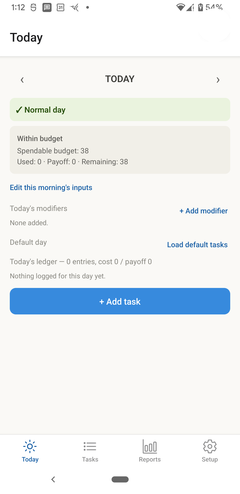
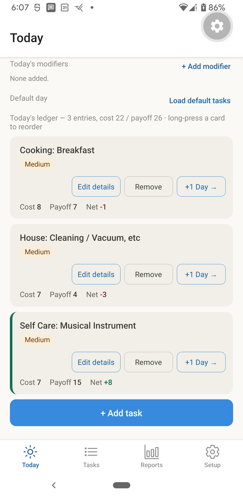
Tour: Tasks (the Menu)
The Tasks tab is your menu — every activity you've ever defined, in one sortable list. Sort by Priority, Cost, Payoff, Net, or Name using the buttons at the top.
Each item shows its Priority badge and its Cost/Payoff/Net across Physical, Emotional, and Cognitive. "Add to Day" drops it straight into today's ledger; Edit opens its name, priority, and all six numbers; Delete removes it from the menu for good — though any day you've already logged with it keeps its own saved copy, untouched.
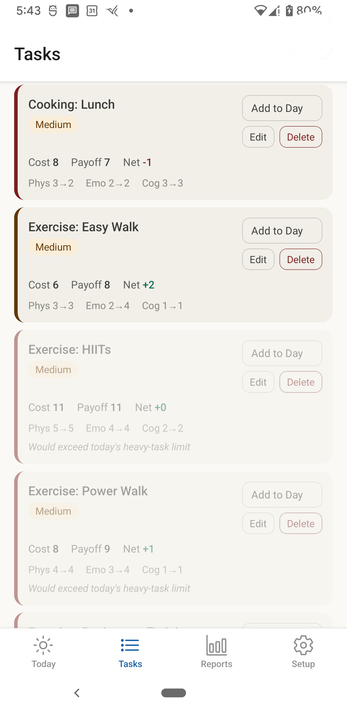
Tour: Reports
Reports is one long page, not a set of tabs — just keep scrolling.
It opens with Budget adherence: a bar for every day, color-coded by how the day went, with a toggle for Last 7 days / Last 30 days / All time. Below that, Cost by dimension breaks each day's cost into Physical, Emotional, and Cognitive, so you can see which one is actually driving your hardest days. Net trend shows whether days are trending toward recharge or depletion.
Further down: Recovery inputs (Body Battery, sleep score, HRV, lined up so you can spot what a hard day costs you the next morning), a Day Mode calendar for a month-at-a-glance view, and Menu insights — average cost, payoff, and net for every activity you've ever logged, across your whole history.
Occasionally, a software update changes how your budget is actually calculated — not your pacing settings, only a real code change, which happens rarely. When that's happened recently, a banner appears right at the top explaining the date it changed and reminding you that an odd jump in the charts below is the math changing, not a shift in your wellness. Tap "Got it" and it won't come back until the next real change. Scroll to the very bottom of Reports anytime for "See all changes" — a permanent, dated list of every one of these, so the record's still there even after you've dismissed the banner.
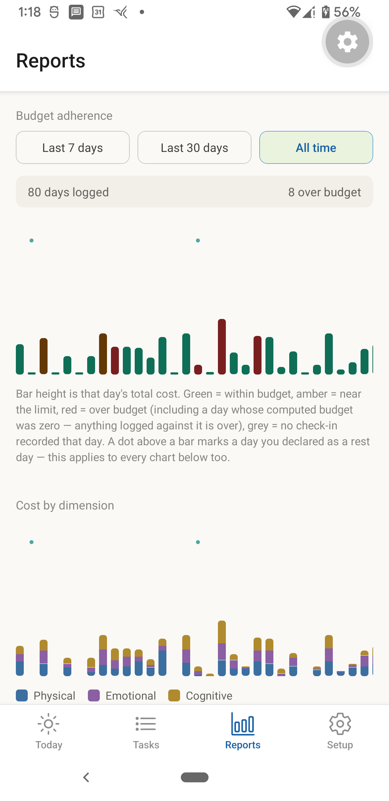
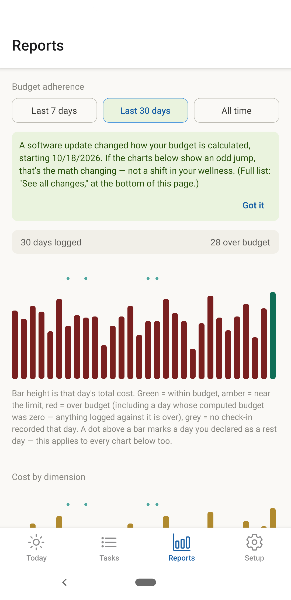
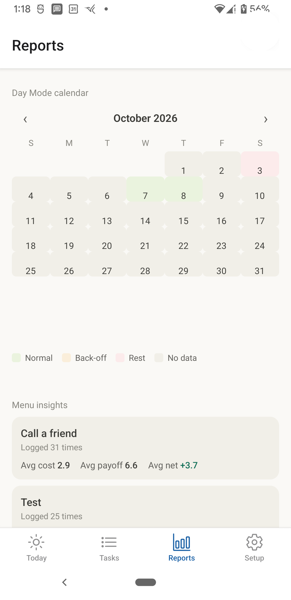
Tour: Setup
Setup is also one continuous page. Scale & thresholds and Battery + sleep → budget cover the numbers behind your daily budget — your pacing percentages and the thresholds that trigger a Back-off day. Rest reminder controls the days-since-rest indicator on Today.
Tap "Show advanced" for heavy-task ceilings and premiums — settings most people won't need to touch. Further down: links out to Default Day and to Backup, restore & wipe, four Appearance themes, and a short note that this app isn't medical advice.
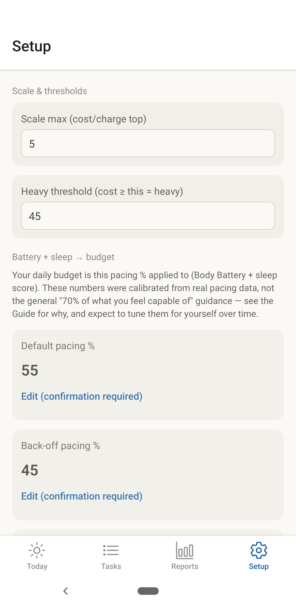
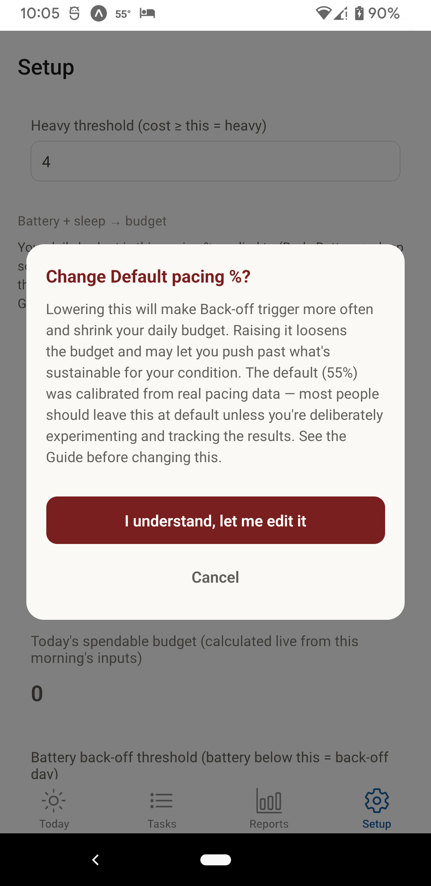
Daily Check-In
Each morning, before anything else, spend a minute on a few simple numbers — your Body Battery, how you slept, maybe your heart rate if you track it. That's it.
No smartwatch? No problem. Leave a field blank and the app just won't use it — it only reacts to a field once you've actually filled it in, so an empty box is never mistaken for a bad reading.
From what you enter, the app works out your day: Normal, Back-off, or Rest. It's not a judgment call — just consistent math, so you don't have to decide every morning whether today "counts" as a hard day.
Forgot to check in, or skipped a day entirely? That's fine. You can always fill it in later — see A Past Day, below.
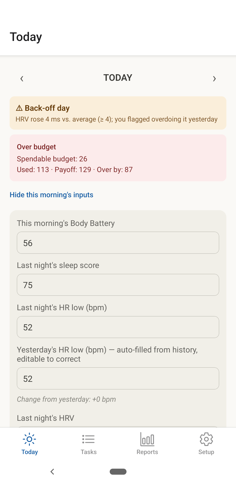
Plan Your Day
Today
Tap "+ Add Task" to pick something from your menu and drop it into today's ledger. Once it's there, it's a snapshot — its own copy of that activity's cost and payoff, not a live link back to the menu.
That matters because it means you can edit a logged task's priority or add a note for today specifically ("Edit details" on its card) without changing the menu item it came from — and editing the menu item later never rewrites what you already logged.
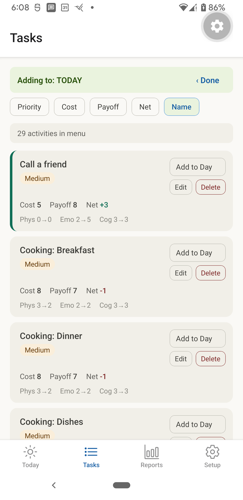
A Past Day
Tap the left arrow, or the date in the middle, to look at an earlier day. Everything you logged that day is real and saved — nothing here is a guess or a reconstruction.
If a day never got a live check-in, you can fill it in afterward. Enter that morning's Body Battery and sleep score, and the app works out what Day Mode and budget the day would have had — so it shows up correctly in Reports, same as any other day.
Past-day edits don't save themselves. You'll see a preview of what the day would compute to, and a "Save check-in" button underneath — nothing is written until you tap it. Today is the one exception: today's own inputs always save the moment you change them, and switching to look at another day never loses what you just entered.
A Future Day
The right arrow — or the calendar — takes you forward as easily as back. A future day's ledger is real and saved, so you can stage tasks ahead of time: block out Thursday's plan on Monday, if that's useful to you.
One thing to know: Today's banner and budget always reflect today's live inputs, not whatever day you're looking at. A future day doesn't have a Day Mode yet, because it doesn't have a morning check-in yet — that only happens once the day actually arrives.
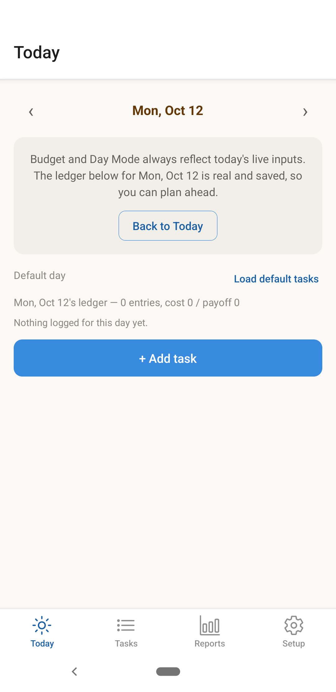
Managing Your Task Menu
Everything in your menu — Cooking: Breakfast, Exercise: Easy Walk, whatever you've built up — lives on the Tasks tab, and you manage it from there, separately from logging any particular day.
Edit opens the same name/priority/six-number form you'd use to create something new. Delete asks you to confirm, and is honest about what it does: it removes the item from your menu going forward, but any day you already logged with it keeps its own saved copy — deleting a menu item never rewrites history.
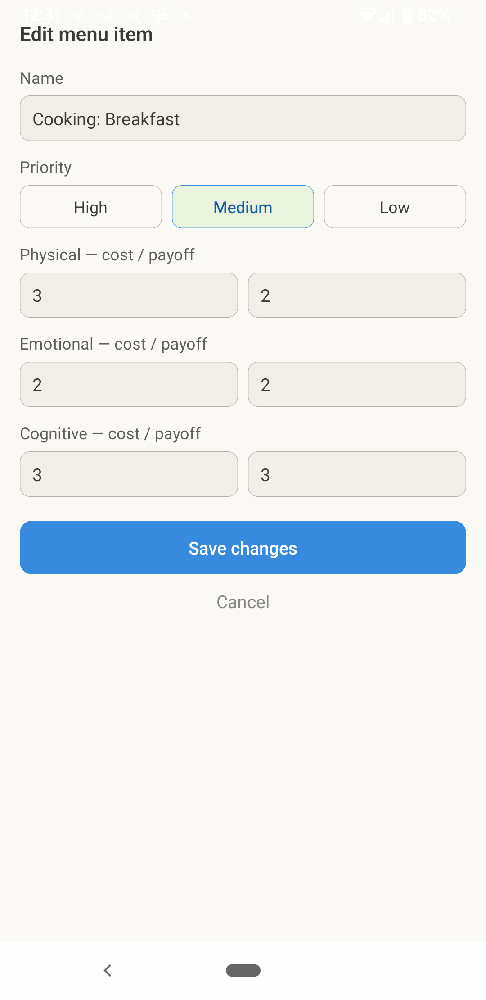
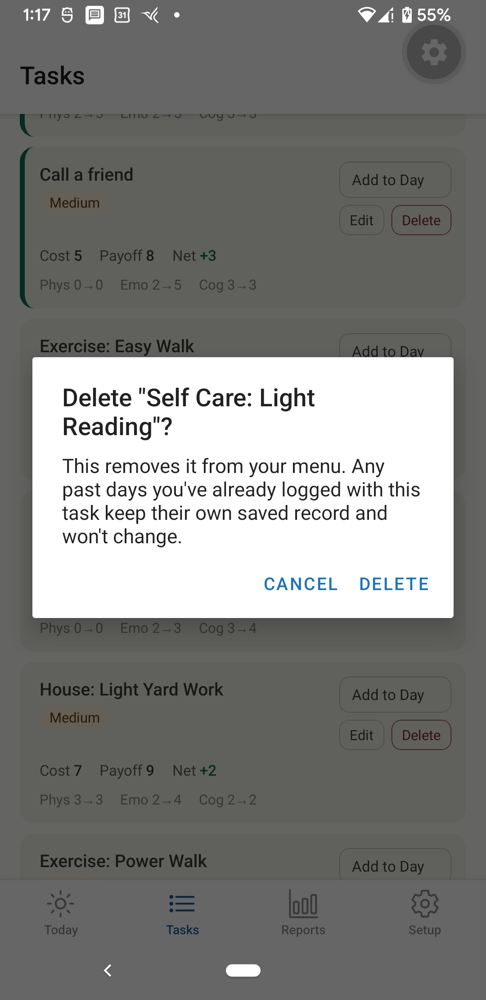
Intraday Budgeting
Plans change mid-day — that's normal, not a failure. Every card in today's ledger has Edit details, Remove, and two more buttons: −1 Day and +1 Day, to move that task to yesterday or tomorrow without retyping it.
If you're running over budget, or just feel worse than you did this morning, moving something to tomorrow is usually the better call than pushing through. The app doesn't judge either way — it just keeps the math honest about whatever you actually decide.
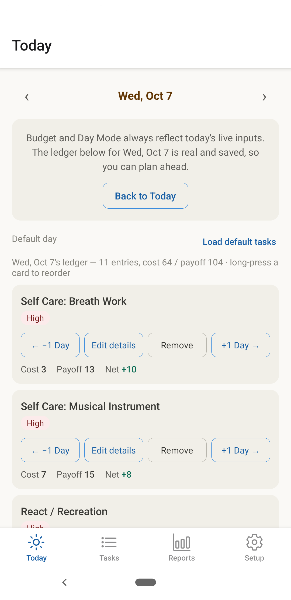
Understanding Day Modes
Three modes, and the app picks one for you every morning based on what you enter: Normal, Back-off, or Rest.
Back-off kicks in when Body Battery or sleep score comes in low, your overnight heart rate or HRV shifts more than usual, or you flagged overdoing it the day before — any one of these is enough on its own. It lowers your pacing percentage, which lowers your budget, and blocks heavy tasks for the day.
Rest is stronger still: zero heavy tasks, regardless of budget. It happens two ways — you can choose it yourself anytime, or the app declares it for you if your Body Battery falls below your hard-rest floor, a lower line than Back-off's own threshold.
Whichever mode you're in, the banner always says why — which signal tripped it, not just that one did.
One thing worth knowing about the actual pacing numbers (the standard percentage, and the lower Back-off one): they're not the general "pace yourself at about 70% of what you feel capable of" advice you may have run into elsewhere. These came from this app's own math, checked against real logged days rather than a feeling of effort. They're also personal — what holds up for one person's body won't necessarily hold for another's, so expect to adjust yours as you learn what actually works, and expect the numbers that work for you to rise as your health improves. That's also why Setup makes you confirm before changing either one: it's an easy pair of numbers to nudge without noticing what it actually does to your budget.
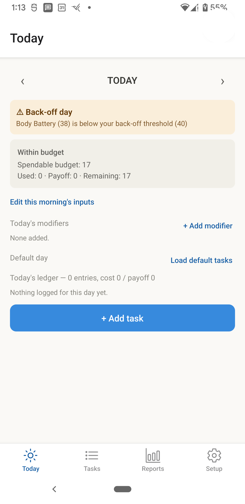
Reading Your Reports
Reports is where patterns show up that a single day never will (see the Reports tour above for what each chart looks like).
A string of red bars in Budget adherence means something about your current pacing isn't matching reality — worth a look at your Setup thresholds. Cost by dimension can point at which kind of task is actually behind your hard days; it's not always the one you'd guess.
And Menu insights, near the bottom, will quietly tell you which activities are consistently worth their cost (a positive average net) and which rarely are. Sometimes the honest answer to "should I keep doing this" is sitting right there in the numbers.
Setting Up Your App
Default Day
Default Day is a list, not a date — it's what "Load default tasks" adds to whatever day you're on, without ever touching what's already there.
Its items aren't their own separate thing: cost and payoff always come live from your Tasks menu, so editing a menu item updates Default Day automatically. There's nothing to keep in sync by hand.
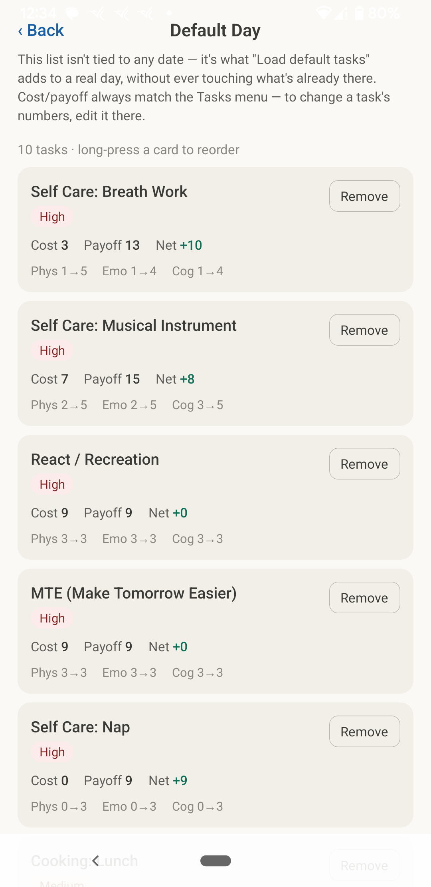
Day Modifiers
Modifiers are a quick, honest discount on today's budget for a day that's already working against you — wildfire smoke, a heat wave with no AC, a rough night's sleep, a flare, too much noise. Pick a preset, or type your own label and percentage.
They stack, up to 100%, and they only ever reduce your budget for one day — nothing here is permanent.
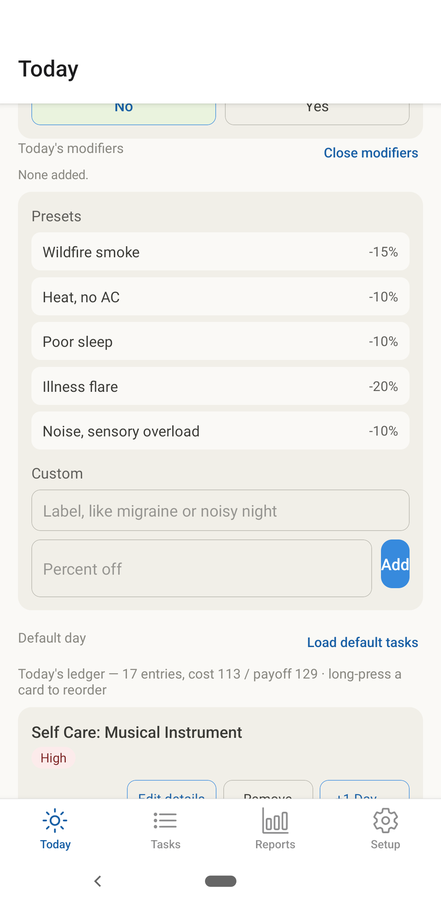
Rest Reminder
Two numbers here control the days-since-rest indicator on Today: how many days before it turns noticeable, and how many before it turns red and the app actually suggests taking one.
Both default to a short window on purpose. Rest is easy to keep putting off, and waiting until you're already depleted to be told so isn't much of a reminder.
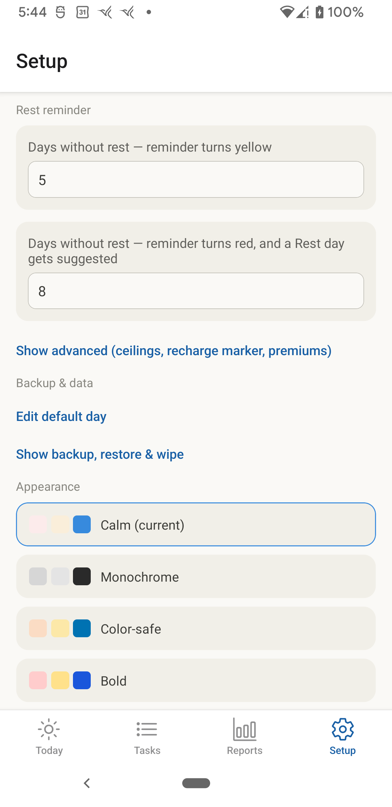
Back-Up / Restore
Setup, Tasks menu, and Days back up and restore completely separately — so you can, say, restore your Setup thresholds from an old backup without touching a single day you've logged since.
Each backup is a plain file you choose where to put: Google Drive, email, your computer, wherever. Restoring a category replaces its current data entirely — there's no partial merge — so keep in mind that's not undoable unless you've got another backup to fall back on.
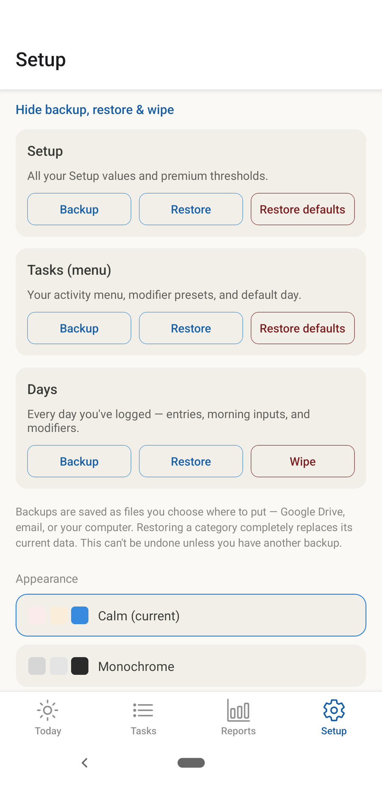
Tips & Tricks
Good Stuff First
It's tempting to only log the things that cost you — the hard stuff, the obligations. But a nap, a walk, time with a friend: these have a real Cost and Payoff too, and the app can't credit them if they're never logged.
Logging the good stuff isn't bookkeeping for its own sake — it's the only way the budget math actually knows what's recharging you, not just what's draining you.
Log the Ordinary Stuff Too
It's just as tempting to skip the other direction — not logging a shower, a meal, doing the dishes — because none of it feels like it costs anything on its own. But a daily $6 coffee doesn't feel like real money either, until you add up a month of them: $180, gone, without ever noticing the one purchase that mattered.
Your body runs the same math on everything you do, whether you write it down or not. Skipping the ordinary stuff doesn't lower what it actually costs you — it just stops the app from seeing it, and stops anyone else reading your reports (a spouse, a doctor, anyone who needs real evidence to believe you) from seeing it too. Logging everything, not just the big obvious things, is what turns a real, cumulative, biological cost from invisible into something you can actually point to. That's true whether you're pacing because you're chronically ill, or because you're the kind of person who's chronically overworking and needs the same evidence to believe your own limits.
MTE (Make Tomorrow Easier)
Make Tomorrow Easier: one small thing a day that moves your actual situation forward, instead of just reacting to whatever's loudest. Decluttering a workspace, ordering a part you'll need, writing a guide you've been putting off — size doesn't matter, direction does.
It's hard to prioritize on purpose, especially if you're chronically ill, a solopreneur, or just wired to always be reacting — doubly hard if you're all three. MTE is already a fixture in Default Day for exactly that reason, so it's on your list without you having to remember to add it.
Task Categories
Every task carries two kinds of description: a Priority (High, Medium, or Low) and a cost/payoff pair across three dimensions — Physical, Emotional, Cognitive.
Priority is about importance; the dimensions are about what kind of toll something takes. A High-priority task can still be cheap, and a Low-priority one can still wipe you out — the two aren't the same axis, and the app tracks them separately on purpose.
Slack Time (React / Recreation)
Life interrupts. A phone call, a crisis, a last-minute ask — these things don't wait for a good time. If you haven't planned for them, they get paid for by borrowing from somewhere else in your day — usually rest.
That's what Slack Time is for. In your Default Day, there's a task called React / Recreation. It has a real cost and a real payoff — both set to 9 — so it holds space in your budget on purpose, without actually costing you anything net.
Here's the clever part: if something unplanned comes up, you edit that entry to say what really happened, and jot a note about it. If nothing comes up? That time is just yours — recreation, already budgeted for, no guilt required.
Either way, the rest of your day stays protected.
Rest Day
Your Today screen always shows how long it's been since your last Rest day — right in the ledger line, so it's never something you have to go looking for. It changes color as the days add up: green while it's recent, plain text once it's been a while, bold red once resting is overdue.
Once it hits red, Today also shows a direct prompt — not just a color, but an actual reminder, with a one-tap way to declare the day a Rest day right there.
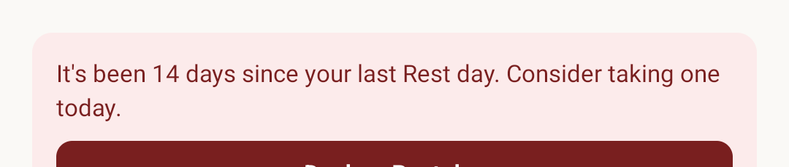
Both numbers — when it turns noticeable, and when it turns red — are yours to set, not fixed in the app. See Rest Reminder under Setting Up Your App.
Your Data & Privacy
No account, no server, nothing leaves your device unless you choose to send it somewhere — a backup file you create and control. If you ever wipe your data, that's genuinely it; there's no copy sitting anywhere else to worry about.
Full detail: Privacy Policy.